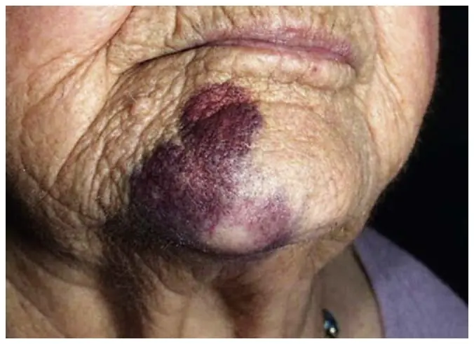
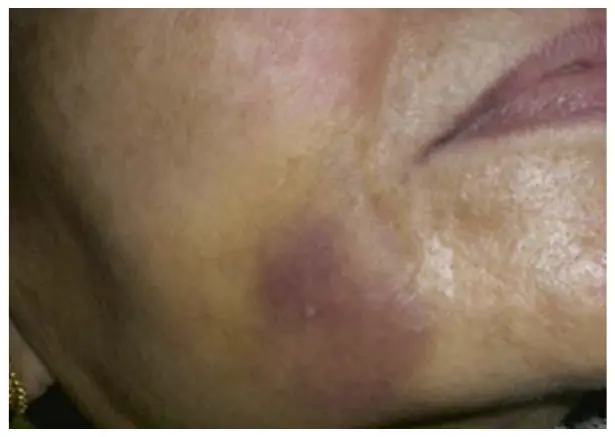

نسخه استخراجشده؛ ترجمه یا تأیید علمی انجام نشده است. وضعیت: captured
پس از بلاک منتال برای ترمیم پرمولر پایین، چند ثانیه بعد در وستیبول کنار پرمولرها برآمدگی بیرنگی ظاهر میشود که بزرگتر میشود. کجا و چقدر فشار میدهی؟

هماتوم یعنی نشت خون به بیرون رگ، وقتی سوزن رگی را زخمی کند. دو عامل اندازهاش را تعیین میکنند:
خونریزی تا وقتی ادامه دارد که فشار بیرون رگ از فشار درون رگ بیشتر شود یا لخته ببندد. در شروع، تغییر رنگی دیده نمیشود چون خون در عمق است. در بیشتر تزریقها رگ میان مخاط و استخوان است و دستکم ۲ دقیقه فشار مستقیم خونریزی را بند میآورد.
در بلاک ASA (آلوئولار فوقانی قدامی) یا اینفرااوربیتال و در بلاک اینسیزیو، فشار روی محل هنگام تزریق و ۱ تا ۲ دقیقه پس از آن جزو خود تکنیک است و خطر هماتوم را کم میکند؛ تکنیک بلاک منتال چنین فشاری ندارد.

اشتباه رایج: گرما را همان روز توصیه کنی تا «کبودی زودتر برود». اثر گرما بر سرعت جذب خون هنوز قطعی نیست و گرمای زودهنگام ضرر دارد. مهمترین درمان هماتوم گذر زمان است.